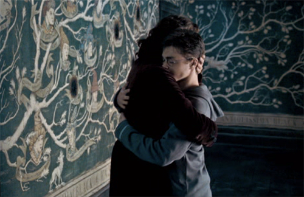
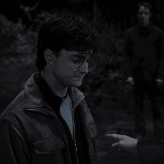
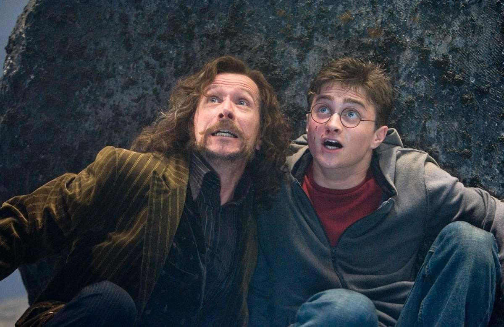
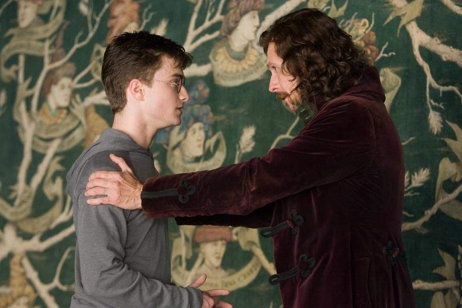

<!DOCTYPE html>
<html>
    <head>
        <meta charset="utf-8">
        <title>PotterScience</title>
        <meta name="description" content="PotterScience">
        <link rel="stylesheet" href="styles.css">
        <link rel="icon" href="star-white.jpg">
    </head>
    
</html>

<body>
    <div class="topnav">
        <a href="index.html"><br>Home</a>
        <a href="facts.html"><br>Facts</a>
        <a href="RantRoom.html"><br>RantRoom</a>
        <a class="active" href="Hogsmeade.html"></a>
      </div>

      <h1 class="Heading1">The One and Only Padfoot of Marauders</h1>
      <P class="pa" style="text-align: center;">Did you know his most memorable sayings?</P>
      <p class="pb">Sirius Black, the best time favourite Godfather in Harry Potter universe.
          He was once famous for jail-breaking himself out of The Azkaban. At first, Harry misunderstood Sirius as the friend who betrayed his parents.
          However the truth will always reveal itsef in the end, whether you like it or not. And thankfully the truth proves Sirius innocent and frees him from guilt.
          When Harry knew Sirius was his only family left, and that he was off the real charge, they practically had a strong and loving father-and-son relationship.
          However, I suppose the best Authors of all time have this kink in murdering the most blessed and beloved characters (other than their main character).
          Unfortunately, Rowling is one of them. Sirius appearance did not last until Harry's last fight because then Sirius was murdered by his own cousin, Bellatrix Lestrange.
          Without further ado, here are some sweet lines of Sirius Black;   
      </p>


      <div>
      <h4 class="gryff">
        1. "We've all got both light and dark inside us. What matters is the part we choose to act on. That's who we really are."
            </h4>
            
            <br>
            <p class="pc">Oh, imagine if you were Harry. You just met this one person this summer, and at last you could sincerely hug soemone and name them as a family, a person you quote from, and then you lost them next summer.
                Okay- okay I guess the term next summer is too exxagerating, but it was a short amount of time, alright?
            Everything new coming from Sirius also became his last for us.
            And I think personally, every line coming out from Sirius is a favourite.
            </p><BR><br>

        
        <h4 class="gryff">
        2. "Besides, the world isn't split into good people and Death Eaters."
        </h4>
        
        <p class="pc">Well, mates. There you go, the SQOTD (S stands for sweetest). Sirius is always known for his positivity.
            This is one of Sirius' quote that shows up in Order of The Phoenix. Quick fyi, this as you  may know is the "prequel" of the previous quote, haha.
        </p><br><br>

        <h4 class="gryff">
        3. "If you want to know what a man’s like, take a good look at how he treats his inferiors, not his equals."
            </h4>
            <p class="pc">Sirius Black was known as an active and fun student in Hogwarts, 
            he was one of the troublemakers known as The Marauders along with Harry's Dad, Remus Lupin and Peter Pettigrew.
            They all have strong personality coming from their pure-bloodline wizards family.
            Sirius, was a man of various honours. What made this Sirius Black is his personality.
            Just to say, he deserve to breathe the fresh air far from Azkaban in a longer term.
            </p><BR><br>

        <h4 class="gryff">
        4. “It’s cruel that I got to spend so much time with James and Lily, and you so little. But know this; the ones that love us never really leave us. And you can always find them in here”
            </h4>
        
        <br>
        <p class="pc">As we know, the real traitor was Peter Pettigrew who have the animagi of a rat.
        Padfoot was like a brother to Prongs, even Dumbledore agreed to it.
        Sirius loves Harry as much as he loves his friendship with James Potter, and as much as Sirius loves himself.
        He was one of the best Wizard in the century following James Potter. They were best-buds made in heaven.
        Sirius also felt many deep losses that scrathes the wound deeper, especially when he lost his best-friend, James.
        But he kept standing strong, holding the wound and smile whilst he fights beside Harry until his last breathe.
        </p><BR><br>

<h4 class="gryff">
        5. “What’s life without a little risk?”
    </h4>
    
    <br>
    <p class="pc">As we know, the real traitor was Peter Pettigrew who have the animagi of a rat.
    Meanwhile our innocent Padfoot was like a brother to Prongs, even Dumbledore agreed to it.
    Sirius loves Harry as much as he loves his friendship with James Potter, and as much as Sirius loves himself.
    He was one of the best Wizard in the century following James Potter. They were best-buds made in heaven.
    Sirius also felt many deep losses that scrathes the wound deeper, especially when he lost his best-friend, James.
    But he kept standing strong, holding the wound and smile whilst he fights beside Harry until his last breathe.
    </p><BR><br>
<h4 class="gryff">
    6. “I would have died! I would have died rather than betray my friends, as we would have done for you!”
    </h4>
    
    <br>
    <p class="pc">Mate, Sirius. Is. Irreplacable. Ever.
    Now, this saying was played in the big screen for Harry Potter and The Order of The Phoenix.
    It would've been brilliant to have a father like Sirius. Just, great.
    </p><BR><br>
      </div>


      <br>
      <br><br><BR><BR><BR><BR><BR><BR><BR><BR><BR><br>
      <footer class="footer">
        <p>Contact us; 
        <a href="jahypotenuse@gmail.com">jahypotenuse@gmail.com</a>&
        <a href="gillparker321@gmail.com">gillparker321@gmail.com</a></p>
      </footer>    
</body>
